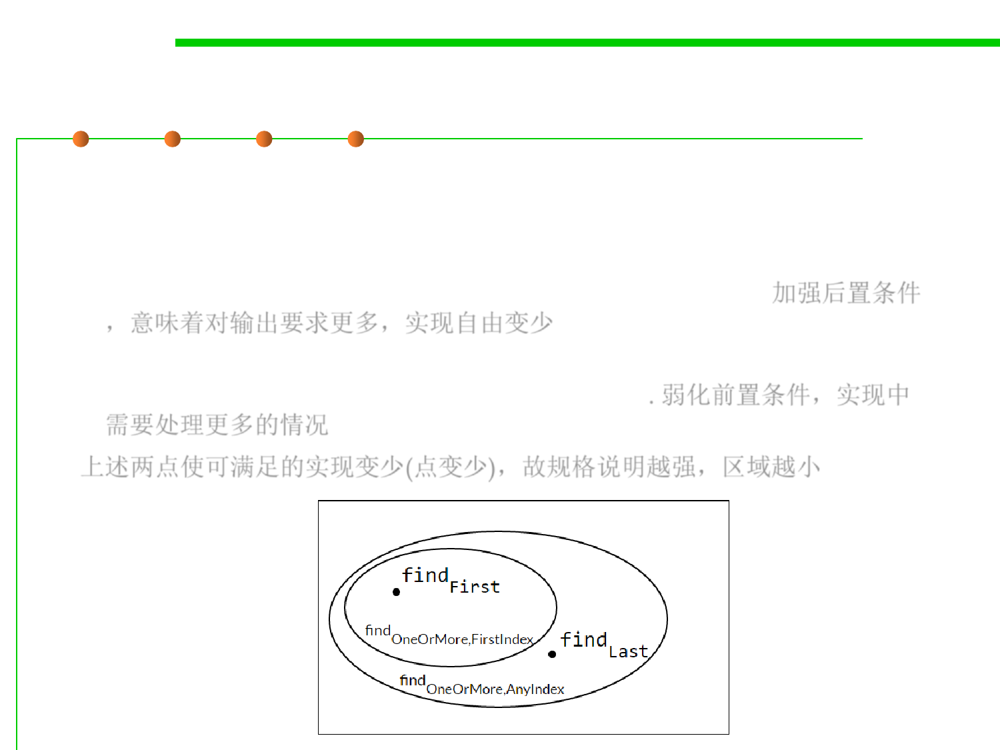

Diagramming specifications
3.2 Designing Specification
▪ When S2 is stronger than S1, it defines a smaller region in this
diagram; a weaker specification defines a larger region.
– Strengthening the postcondition: For implementors, it means they have
less freedom, the requirements on their output are stronger. 加强后置条件
，意味着对输出要求更多，实现自由变少
– Weaken the precondition: Implementations will have to handle new
inputs that were previously excluded by the spec. 弱化前置条件，实现中
需要处理更多的情况
上述两点使可满足的实现变少(点变少)，故规格说明越强，区域越小